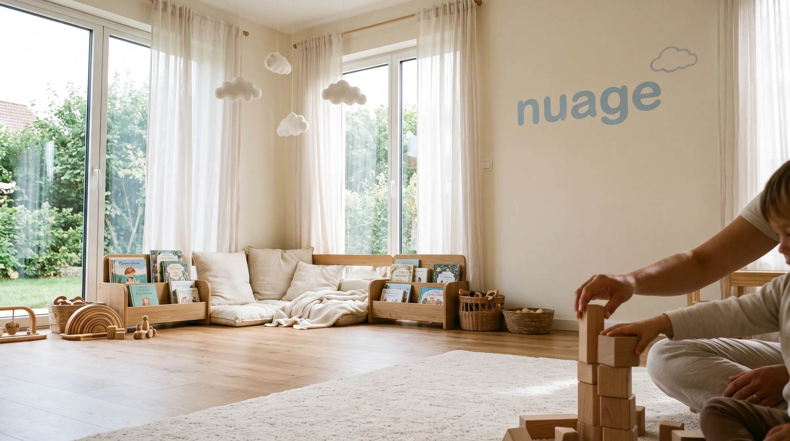
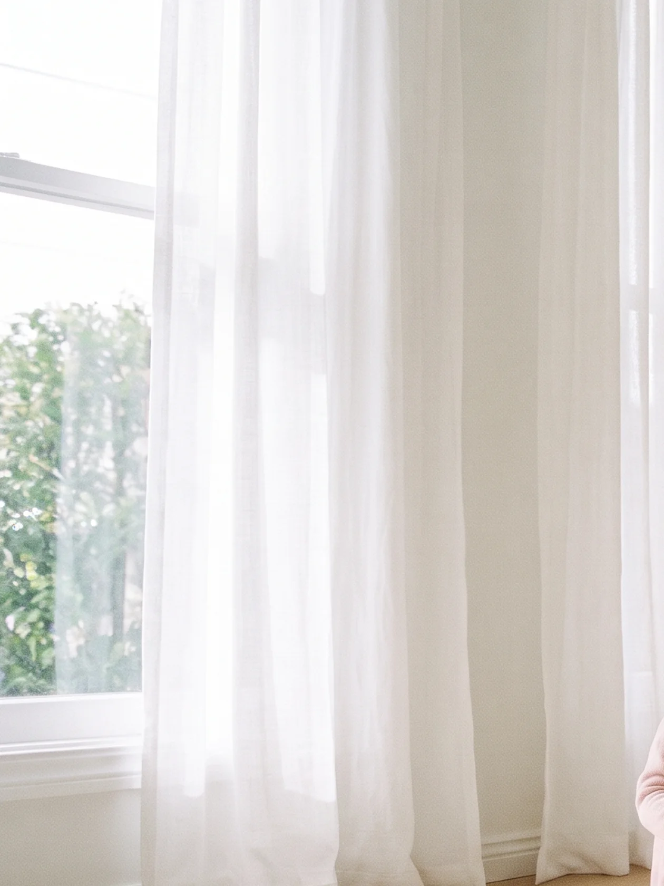
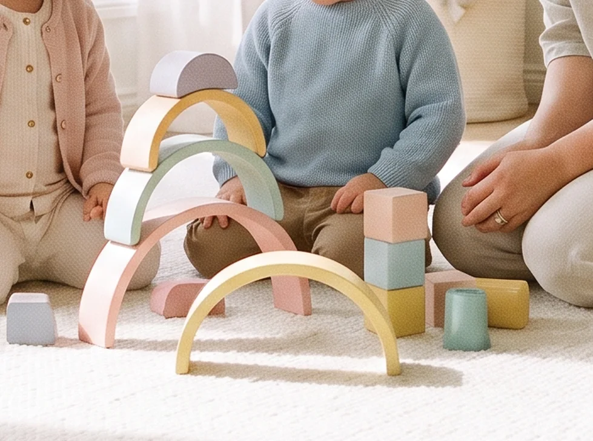
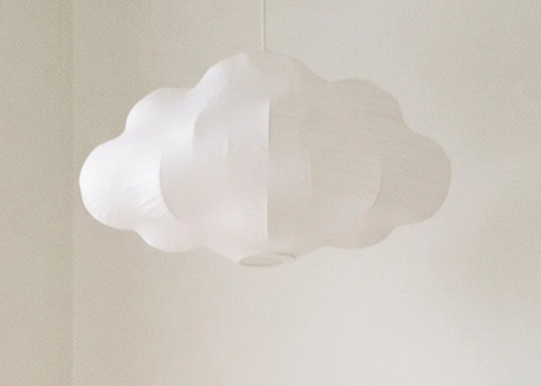
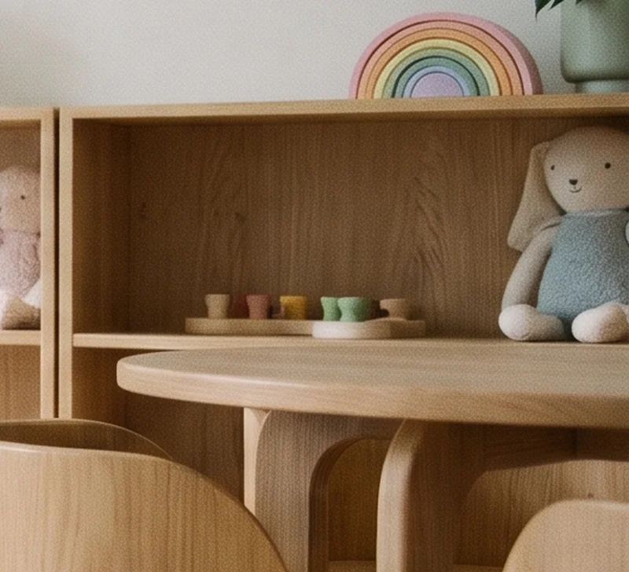

Bilingual nursery · 10 weeks to 3 years
Where every morning starts softly.
A calm room full of light, where your child discovers the world at their own pace, in English and in French.
I · At child height
Low chairs, open shelves, adults who kneel to talk. The room is built for the smallest.
II · Hands first
Stack, miss, try again. Long before words, children learn with their hands.
III · Morning light
Linen curtains, a pale rug, nobody in a hurry. Here, the day starts slowly.
Two languages, one pace: theirs.
Our approach
Nuage is a small bilingual nursery for children from 10 weeks to 3 years. A room full of morning light, wooden toys within reach, and adults who take their time. Every day happens in English and in French, without lessons, the way a family speaks at home.
A day at Nuage
From the first hug to the reunion.


Bon appétit


See you tomorrow
- 8:00am
Hello, bonjour
A word for each parent, a wave at the window, a gentle start.
- 9:30am
Play
Stack, compare, start again. Fine motor skills grow one wooden arch at a time.
- 11:45am
Lunch
Seasonal meals adapted to each age, eaten slowly at a low table.
- 1:00pm
Nap
Each child with their comforter, each at their own rhythm, under soft light.
- 3:30pm
Free play
Simple toys in wood and fabric, put away at child height.
- 5:30pm
The reunion
The day's notebook, shared with you: what they ate, discovered and loved.
Example schedule, for the demonstration.
Two languages
Every word, twice.
One adult speaks English with the children, another speaks French, always the same one. Children hear both all day long, in songs, at meals and at bedtime, and answer in whichever comes first.
Visits and enrolment
Come and see the room.
Book a visit with your child, or send a pre-enrolment request. Every family receives a personal answer.